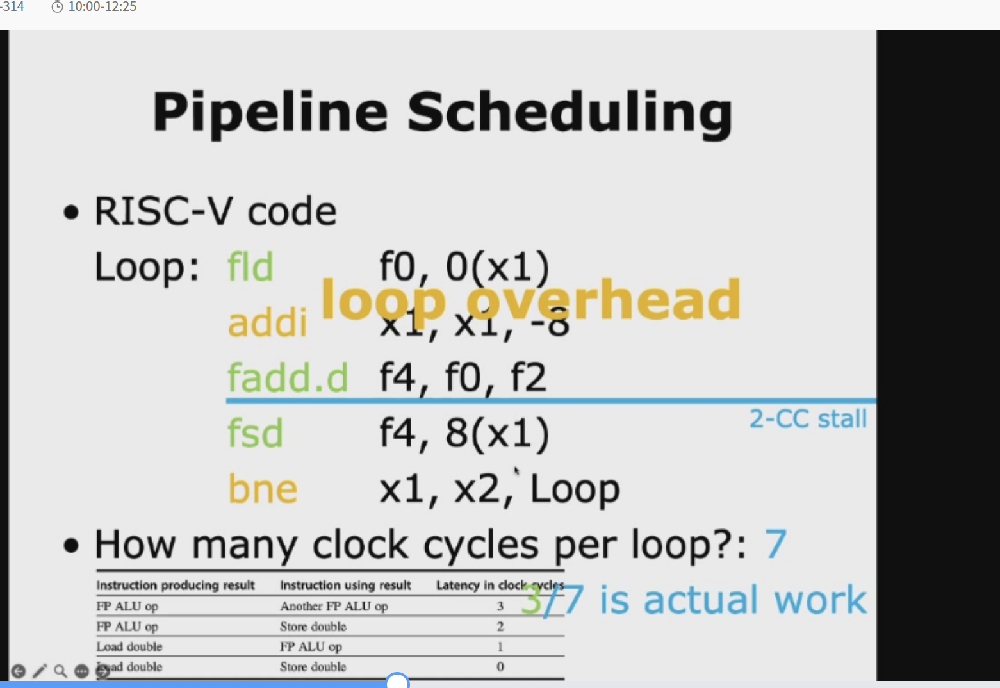
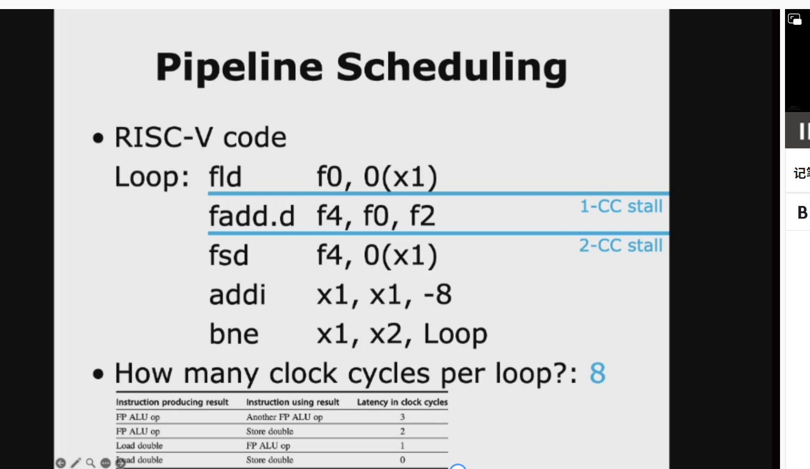
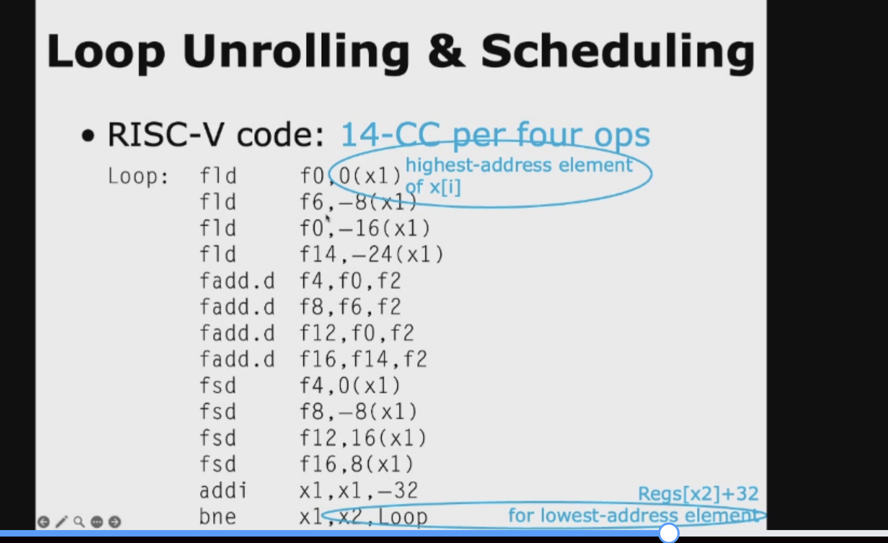
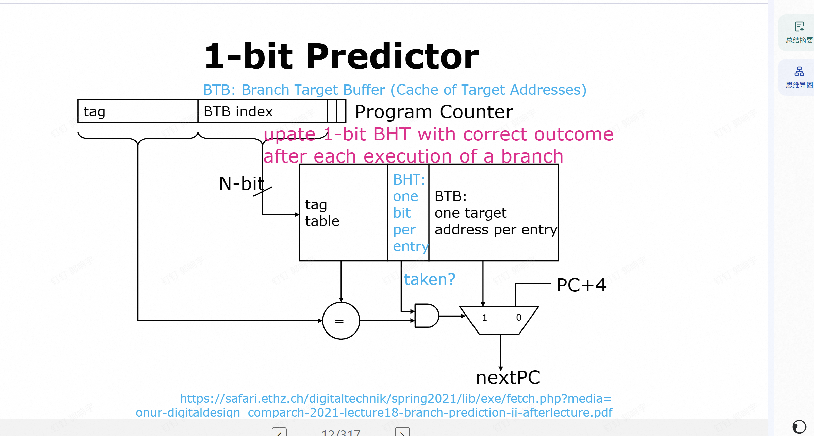
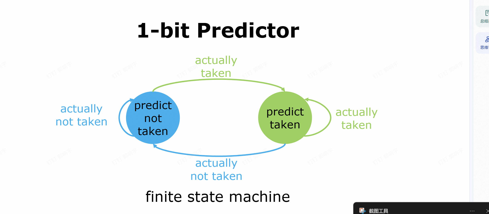

指令并行¶
第一页：ILP Exploitation（指令级并行的开发）¶
这页讲的是CPU如何利用指令级并行（Instruction-Level Parallelism, ILP），也就是让多条指令同时执行来提速，分两大流派：
-
Compiler-based static parallelism（基于编译器的静态并行）
- 核心：在程序运行前，由编译器分析代码、找出能并行执行的指令，并重新排列它们的顺序。
- 局限：这种方法只在特定场景下效果好——比如领域专用环境（像嵌入式DSP）或者结构规整的科学计算程序（比如矩阵运算），这类程序里存在大量数据级并行（比如向量/数组运算），编译器很容易分析出依赖关系。
- 为什么有局限？因为通用程序（比如分支多、依赖复杂的代码）里，编译器很难提前预测所有可能的执行路径，没法高效挖掘并行性。
-
Hardware-based dynamic parallelism（基于硬件的动态并行）
- 核心：在程序运行时，由CPU硬件（比如乱序执行单元、重排序缓存）动态分析指令依赖，把能并行的指令找出来乱序执行。
- 特点：不需要编译器提前做太多优化，对通用程序也能有效利用ILP，现代高性能CPU（比如x86、ARM的主流架构）基本都用这套方案。
第二页：Static Scheduling（静态调度的具体技术）¶
这页是对“编译器静态并行”的补充，讲了两种编译器常用的优化手段：
-
Pipeline Scheduling（流水线调度）
- 目标：避免流水线“气泡”（stall，也就是流水线空转、等数据的情况）。
- 做法：编译器在编译阶段就重新排列指令顺序，把没有依赖关系的指令插到数据相关的指令之间，让流水线能一直跑满。
- 例子：比如指令A要算结果给指令B用，编译器会在A和B之间插入几条和它们都无关的指令C、D，这样A执行的时候，C、D也能并行执行，不会空等。
-
Loop Unrolling（循环展开）
- 目标：减少循环的控制开销，同时增加可并行的指令数量。
- 做法：把循环体复制多份，减少循环次数，让每次循环里执行更多有效指令，摊薄分支、循环计数器更新这类“开销指令”的占比。
- 例子：原来的循环是
for(i=0; i<4; i++) { a[i] = b[i] + c[i]; }，展开2次后变成： 这样循环次数减半，每次循环里有两条独立的加法指令，编译器更容易把它们调度到流水线里并行执行。
一句话总结¶
这两页PPT讲的是： CPU提速的核心是利用指令级并行（ILP），实现方式分两种： - 静态：编译器提前排好指令顺序、展开循环，适合规整的科学计算； - 动态：硬件在运行时乱序执行，适合通用程序，是现代CPU的主流方案。
循环展开¶
第一张：原始循环的流水线调度案例¶
你已经看过这张了，我帮你快速复盘一下：
原始C代码¶
功能：从后往前，给数组x 的每个元素加上常数 s。
对应的RISC-V汇编（未优化）¶
Loop:
fld f0, 0(x1) // 加载 x[i] 到 f0
fadd.d f4, f0, f2 // f0 + s（存在f2），结果到f4
fsd f4, 0(x1) // 存回 x[i]
addi x1, x1, -8 // 指针减8（双精度占8字节）
bne x1, x2, Loop // 判断是否继续循环
addi 和 bne 这两条“控制开销指令”，但它们本身不做有效计算。
2. 浮点指令之间存在强依赖，fld → fadd.d → fsd 形成一条长依赖链，容易造成流水线停顿。
第二张：循环展开（Loop Unrolling）的优化实现¶
这张就是对上面的循环做了4次展开的版本，我们逐行拆解：
展开后的汇编代码¶
Loop:
// 第1次迭代：处理x[i]
fld f0, 0(x1)
fadd.d f4, f0, f2
fsd f4, 0(x1) // //drop addi & bne 注释：不用每次都执行addi和bne了
// 第2次迭代：处理x[i-1]
fld f6, -8(x1)
fadd.d f8, f6, f2
fsd f8, -8(x1) // //drop addi & bne
// 第3次迭代：处理x[i-2]
fld f0, -16(x1)
fadd.d f12, f0, f2
fsd f12, -16(x1) // //drop addi & bne
// 第4次迭代：处理x[i-3]
fld f14, -24(x1)
fadd.d f16, f14, f2
fsd f16, -24(x1)
addi x1, x1, -32 // 一次减32（=4×8），直接处理4个元素
bne x1, x2, Loop // 只在4次迭代后判断一次
它解决了两个核心问题：¶
-
减少循环控制开销
- 原来每1次循环，都要执行1次
addi+ 1次bne，共2条控制指令。 - 现在展开4次后，每4次循环才执行1次
addi+ 1次bne，相当于控制开销减少了75%。 - 程序中有效计算指令（
fld/fadd.d/fsd）的占比大幅提升，CPU的“干活效率”变高了。
- 原来每1次循环，都要执行1次
-
创造了更多可并行的指令（为流水线调度铺路）
- 原来的循环里，只有一条
fld→fadd.d→fsd的依赖链，很难调度。 - 现在展开后，有了4条完全独立的浮点运算链（用不同的浮点寄存器
f0/f6/f14保存中间结果）。 - 编译器/CPU可以把这些独立指令交叉调度，比如在等待第一个
fadd.d完成时，提前执行第二个fld，彻底填满流水线，消除气泡。
- 原来的循环里，只有一条
关键细节：为什么地址是 -8(x1)、-16(x1)？¶
- 原始循环里，我们是先计算，再减地址，所以每次都用
0(x1)访问当前元素。 - 展开后，我们一次性处理4个元素，地址从
x1开始，分别是x1、x1-8、x1-16、x1-24，最后再一次性把x1减去32。 - 这样就避免了每次迭代都修改
x1，减少了依赖，也减少了控制指令。
一句话总结这两页PPT的关系¶
第一张是原始循环的问题：控制开销大、指令依赖集中、流水线利用率低； 第二张是用循环展开解决这些问题：减少控制开销、增加独立指令、为流水线调度创造更多并行机会。
。



分支调度¶
这4张PPT讲的是编译器里为了挖掘指令级并行（ILP）的高级静态调度技术，我帮你按顺序串起来讲清楚👇
第1张：Frequent Critical Path（高频关键路径）¶
这是后面所有优化的核心思想：优先优化程序里执行次数最多的路径。
- 例子里的分支，99%的情况都会走“A(i)=0 为真”的路径，只有1%走另一条。
- 编译器的策略是：把高频路径当成“没有分支”来处理，像普通直线代码一样重排、调度指令，最大化它的并行度；低频路径暂时不管。
- 这是所有“基于跟踪（Trace）”优化的起点：抓大放小，优先优化绝大多数情况。
第2张：Trace Scheduling（跟踪调度）¶
这是实现上面思想的经典算法，核心就是“把高频路径拼成一条连续的Trace（跟踪）”：
1. Unrolled trace（展开的跟踪）：
把高频路径的指令串起来，比如例子里把循环里每次都走的“A(i)=0→B(i)=→C(i)=”拼成一条连续的指令序列，相当于把分支“抹平”了，方便编译器做全局调度。
2. Trace Exit（跟踪出口）：
当程序不走高频路径（比如遇到1%的分支）时，会从Trace里跳出去，这里叫Trace Exit。
3. Trace Entrance（跟踪入口）：
低频路径执行完后，再跳回Trace里继续执行，这里叫Trace Entrance。
简单说：Trace Scheduling就是把高频路径拼成一条直线，编译器就可以像优化无分支代码一样，随便重排指令、挖掘并行性了。
第3张：Fixup Code（补偿/修复代码）¶
Trace Scheduling有个问题：你重排了高频路径的指令顺序，但低频路径的执行顺序被打乱了，可能会出错。
- 解决方法就是写Fixup Code（补偿代码）：
1. 重排指令的时候，在Trace Exit和Trace Entrance的位置，复制一份需要的指令（比如例子里的B'、C'''）。
2. 这样就算程序跳出了高频路径，也能通过补偿代码保证低频路径的执行结果是正确的。
- 代价是：代码体积会变大（因为复制了很多指令），但换来了高频路径的极致性能。
第4张：Superblock（超级块）¶
这是Trace Scheduling的简化版，也是现在编译器更常用的技术，核心是Tail Duplication（尾部复制）：
- 例子里的分支：opA执行后，99%的情况走opC，1%走opB再到opC'。
- 做法：把高频路径opA→opC拼成一个“超级块”，把低频路径里和高频路径结尾相同的指令（比如opC）复制一份，变成opC'，附在低频路径后面。
- 好处：
1. 高频路径变成了一条无分支的直线，编译器可以自由调度。
2. 低频路径通过复制的指令保证了正确性，还可以做额外优化（比如例子里把opC: mul r3,r2,3改成mov r3,r1，因为opA已经算过r1=r2*3了，直接复用结果，这就是Subexpression elimination，公共子表达式消除）。
一句话总结这4张PPT¶
它们讲的是： 1. 先找出程序里99%时间都在跑的高频关键路径； 2. 用Trace Scheduling/Superblock把它拼成一条无分支的直线代码； 3. 重排指令顺序，最大化并行度； 4. 用Fixup Code/Tail Duplication保证剩下1%的低频路径也能正确执行。
这就是编译器静态调度的“极限玩法”，专门解决分支导致的指令级并行挖掘难题。
control hazard¶
我帮你把这三张PPT串起来，从「问题是什么→怎么解决→代价是什么」一步讲透，保证你完全理解。
先铺垫：流水线的基本规则¶
这是一个典型的5级流水线，每个指令会被拆成5个阶段，重叠执行： | 阶段 | 全称 | 作用 | |------|------------|--------------------| | IF | Instruction Fetch | 取指：从内存拿指令 | | ID | Instruction Decode | 译码+读寄存器 | | EX | Execute | 执行/计算地址 | | MEM | Memory Access | 访存 | | WB | Write Back | 写回寄存器 |
流水线的核心优势是重叠执行：比如周期2，指令1在做ID，指令2同时在做IF，每个周期都在干活。
第一张PPT：Control Hazard & Branch Hazard（问题的根源）¶
核心矛盾：分支指令会“打乱”取指节奏¶
流水线默认按顺序取指令，每次取 PC+4 的下一条指令。但遇到分支/跳转指令（比如 beq）时，有两种可能：
1. Taken（分支成立）：PC跳转到目标地址，不按顺序执行。
2. Untaken（分支不成立）：PC继续走 PC+4，按顺序执行。
致命延迟：PC要到什么时候才确定？¶
PPT明确说了：PC is not changed till the end of ID（PC要到ID阶段结束才会更新）。
举个例子，分支指令 B 的执行过程：
| 周期 | 分支指令B的阶段 | 下一条指令i+1的阶段 | 问题 |
|------|----------------|---------------------|------|
| 1 | IF（取指） | - | 正常 |
| 2 | ID（译码+判断条件） | IF（按PC+4取指） | B还没判断完，i+1已经按默认地址取了 |
| 3 | EX | ID | 如果分支成立，i+1取的是错的！ |
这就是Branch Hazard（分支冒险）：因为分支指令要到ID阶段结束才知道下一条指令的地址，而流水线已经提前取了下一条指令，可能取错，导致整个流水线出错。
第二张PPT：Redo IF（停顿取指，最简单的解决办法）¶
思路：先等分支判断完，再取正确的指令¶
为了避免取错指令，我们直接让流水线停顿（Stall），等分支指令在周期2结束、PC确定了，再重新取指（Redo IF）。
看PPT里的时间线（列是周期）： | 指令 | 周期1 | 周期2 | 周期3 | |---------------------|-------|-------|-------| | Branch instruction | IF | ID | EX | | Branch successor | - | - | IF |
也就是： - 周期1：B正常取指（IF） - 周期2：B在ID阶段判断条件，流水线停顿，不取下一条指令 - 周期3：B的ID阶段结束，PC确定了，再开始取下一条指令（IF）
这相当于流水线停了1个周期，保证取到的指令一定是对的。
但这个方法有个明显缺点：
如果分支不成立（untaken），其实下一条指令本来就该是 PC+4，和判断结果一样，那这个停顿就白做了，浪费了1个周期。
第三张PPT：Freeze or Flush the Pipeline（冻结/冲刷流水线）¶
思路：在分支目标确定前，“暂停”或“删除”错误指令¶
这是更通用的解决办法，有两种操作： 1. Freeze（冻结）：在分支指令知道目标地址前，把流水线“冻住”，不执行分支后的任何指令，直到PC确定。 2. Flush（冲刷）：如果已经取了错误的指令，直接把它们从流水线里删掉（冲掉），等PC确定后再取正确的指令。
看PPT里的时间线： | 指令 | 周期1 | 周期2 | 周期3 | |---------------------|-------|-------|-------| | Branch instruction | IF | ID | EX | | Branch successor | - | - | IF |
这里的successor指令，IF阶段推迟到了B的EX阶段，说明分支判断要到EX阶段才完成，所以需要停顿2个周期，把周期2本来要取的错误指令冲掉，周期3再重新取。
这个方法的核心是保证不会执行错误指令，代价是流水线停顿，浪费周期（停顿的长度取决于分支判断的阶段）。
三张PPT的逻辑链总结¶
- 问题：分支指令导致PC不确定，下一条指令可能取错（分支冒险）。
- 最简单解决：停顿1个周期，等分支判断完再取指（Redo IF）。
- 通用解决：冻结/冲刷流水线，在分支目标确定前不执行分支后的指令，代价是流水线停顿。
续集¶
我帮你把这两张PPT拆成「人话版」，先讲延迟分支（Delayed Branch），再讲硬件分支预测（BTB+方向预测器），最后串起来它们的作用和区别👇
第一张：Delayed Branch（延迟分支）¶
这是一种靠编译器静态调度解决分支冒险的老方法，核心思路是：不用让流水线停顿，而是把“分支带来的气泡，用一条安全的指令填上”。
核心规则（先记死）¶
分支指令的效果，要等它后面的下一条指令执行完才生效。 不管分支最后「跳还是不跳」，这条紧跟在分支指令后面的指令，都会被执行。 这条指令所在的位置，就叫 Branch delay slot（分支延迟槽）。
举个最直观的例子¶
比如原来的代码，分支指令后面有个气泡：
延迟分支的解决方法：编译器找一条和分支无关的指令，挪到延迟槽里，把气泡填上： - 这条addi和分支的判断、跳转完全无关，所以不管分支结果如何，执行它都不会出错。
- 流水线也不用停顿，直接连续执行，没有气泡，完美利用了原来浪费的周期。
PPT里的关键信息解读¶
pipelining sequence：branch instruction → sequential successor → branch target if taken就是说，流水线的执行顺序是：分支指令 → 延迟槽指令 → （如果分支成立）跳转到目标地址。- 蓝色框的解释：延迟槽指令是和分支目标无关的指令，无论分支是否成立，都会被执行，所以编译器必须选一条安全的指令填进去。
延迟分支的优缺点¶
✅ 优点：硬件不需要做任何停顿，靠编译器就能消除气泡，实现简单。 ❌ 缺点： 1. 延迟槽数量有限（通常只有1个，少数CPU有2个），不是所有分支都能找到无关指令填进去。 2. 现代CPU的流水线越来越长，分支延迟不止1个周期，延迟槽不够用了。 3. 编译器的调度负担变重，而且会让代码的可读性变差。 所以现在的通用CPU已经不用延迟分支了，转向硬件动态预测。
第二张：Fetch Stage with BTB & DP（带BTB和方向预测器的取指阶段）¶
这是现代CPU主流的硬件动态分支预测方案，核心思路是：在取指阶段就预测分支的方向和目标地址，直接算出下一条指令的地址，完全不用等分支指令执行完，从根源上消除气泡。
先搞懂每个模块的作用¶
| 模块 | 全称 | 作用 |
|---|---|---|
| PC | Program Counter | 当前分支指令的地址，作为输入 |
| Direction Predictor (DP) | 方向预测器 | 预测这个分支会不会跳转（taken / not taken），比如用2位饱和计数器，根据历史行为预测 |
| BTB | Branch Target Buffer（分支目标缓冲） | 一个高速缓存，存之前执行过的分支指令的「目标地址」，用PC查缓存，命中就直接拿到目标地址 |
| 多路选择器 | MUX | 根据预测结果，选择下一个取指地址：如果预测分支成立且BTB命中，就用目标地址；否则用PC + 指令长度（顺序地址） |
整个流程（一步到位）¶
- 当前分支指令的PC，同时送到方向预测器和BTB。
- 方向预测器预测：这次分支会不会跳转？
- BTB查询：这个分支之前执行过吗？如果命中，就拿到它的目标地址。
- 两者结合判断：如果预测“跳转”且BTB命中，就把目标地址作为下一个取指地址；否则用顺序地址。
- 输出
Next Fetch Address，直接给下一个周期的PC用，流水线不用停顿，也不用等分支指令执行完。
核心优势¶
- 零停顿（大部分情况）：在取指阶段就完成了分支预测，流水线可以连续取指，没有气泡。
- 动态自适应：方向预测器会根据分支的实际结果更新预测规则，预测准确率很高（现代CPU能到95%以上）。
- 不用编译器操心：完全由硬件实现，对上层软件透明，程序员和编译器都不用做额外优化。
两张PPT的关系总结¶
| 方案 | 延迟分支（第一张） | BTB+方向预测器（第二张） |
|---|---|---|
| 解决思路 | 编译器静态调度，用无关指令填气泡 | 硬件动态预测，提前算出下一个地址 |
| 实现主体 | 编译器 | 硬件 |
| 停顿代价 | 无停顿（填槽成功时） | 预测错误才会有停顿（准确率很高，几乎可以忽略） |
| 适用场景 | 早期短流水线CPU（如MIPS RISC） | 现代长流水线CPU（x86、ARM等） |
动态预测¶
我帮你把这三张PPT串起来，从静态预测→动态预测→最简单的1-bit动态预测器，一次性讲透，顺便对比清楚它们的核心区别👇
一、总纲：分支预测的核心目标¶
不管静态还是动态，都是为了解决分支冒险： CPU在取指阶段，不知道分支指令会不会跳、跳到哪，只能先猜一个地址取指。 - 猜对了：流水线零停顿，性能拉满； - 猜错了：流水线要冲刷、停顿，性能损失。
所以，预测准确率越高，流水线效率越高。
第一张：Static Branch Prediction（静态分支预测）¶
核心定义：预测规则在编译时就定死，运行时永远不变¶
不管分支实际怎么走，CPU都按固定策略猜，不会根据运行结果调整。
常见的静态预测策略¶
- 固定预测Taken（跳转）：
比如循环里的分支（
for/while的回跳），99%的情况都会跳回循环头，所以直接猜“会跳”。 - 固定预测Not Taken（不跳转）：
比如普通
if分支，很多时候会走顺序执行的路径，直接猜“不跳”。 - 编译器辅助预测：
编译器分析代码，给分支加hint（比如C里的
__builtin_expect、likely/unlikely），CPU按编译器的hint来猜。
图里的结构怎么理解？¶
你看到的BTB+方向预测器的图，是分支预测的通用框架，静态预测的“方向预测器”是“固定输出”： - 比如永远输出“taken”，或者永远输出“not taken”，不会根据分支实际结果更新状态。 - BTB在这里还是存分支目标地址，但方向预测是固定的。
优缺点¶
✅ 优点：实现超级简单，不需要额外硬件存历史状态，早期CPU常用。
❌ 缺点：
- 对复杂/不规律的分支（比如交替执行的if-else），准确率很低；
- 没法适应分支的变化，比如循环次数变了、分支行为变了，预测策略还是老的。
第二、三张：Dynamic Branch Prediction（动态分支预测）¶
这是现代CPU的主流方案，核心是：运行时根据分支的历史行为，动态调整预测规则，越猜越准。
核心组件：BHT（Branch History Table，分支历史表）¶
- 一个高速小表，用分支指令地址的低位当索引，每个条目存这个分支的历史状态（比如1-bit、2-bit计数器）。
- 每次遇到分支，先查BHT的状态来预测；分支实际执行完，再根据结果更新BHT的状态，下次预测就用新状态。
重点：第三张PPT的「1-bit Predictor（单比特预测器）」¶
这是最简单的动态预测器，也叫“last-time predictor”（按上次结果猜）。
原理（一句话）：¶
每个分支在BHT里存1位状态，用它来预测：
- 1：表示这个分支上次跳了，这次预测“会跳（taken）”；
- 0：表示这个分支上次没跳，这次预测“不跳（not taken）”。
完整流程¶
- 取指阶段：用当前分支的PC查BHT，拿到1位状态，按状态预测下一个取指地址；
- 执行阶段：分支指令算出实际结果（跳/不跳）；
- 更新阶段：根据实际结果，把BHT里的状态改成对应的
1或0，供下次预测用。
举两个直观的例子¶
例子1：循环分支（规律分支）¶
比如for(i=0; i<100; i++)的回跳分支：
- 前99次都会跳回循环头，BHT里的状态一直是1，每次都猜“会跳”，准确率100%，流水线零停顿。
- 只有最后一次退出循环时会猜错，更新状态为0，但影响很小。
例子2：交替分支（不规律分支）¶
比如每次都交替走的if-else分支：
- 第一次走if（跳）→ BHT设1；
- 第二次猜跳，但实际走else（不跳）→ BHT设0；
- 第三次猜不跳，但实际走if（跳）→ BHT设1；
- 永远错一半，准确率只有50%，每次猜错都要冲刷流水线。
优缺点¶
✅ 优点：比静态预测准确率高很多，尤其是规律分支，实现也很简单。 ❌ 缺点：对交替分支、刚进入/退出循环的分支，准确率很低，这也是为什么后来会有更复杂的2-bit、两级预测器。
三、静态 vs 动态：一句话对比¶
| 维度 | 静态分支预测 | 动态分支预测（1-bit） |
|---|---|---|
| 预测依据 | 编译时定死的固定策略 | 分支的历史行为（上次结果） |
| 运行时调整 | 不调整 | 每次分支执行完都会更新状态 |
| 规律分支准确率 | 高（比如循环） | 很高 |
| 不规律分支准确率 | 低 | 中等（比静态好） |
| 硬件开销 | 几乎为0 | 很小（只需要BHT） |
四、三张PPT的逻辑链¶
- 先讲静态预测：用固定策略猜分支，简单但不灵活；
- 再讲动态预测：用分支历史动态调整，准确率更高；
- 最后讲动态预测里最简单的1-bit预测器：只记上一次的结果，实现了“看历史猜未来”。
1bit预测¶
这两张图合起来，就是1-bit分支预测器的完整硬件实现和状态更新逻辑： - 第一张讲「硬件怎么在取指阶段做预测」 - 第二张讲「每次分支执行完，预测状态怎么更新」
我帮你拆解得明明白白，还会呼应你之前问的「交替分支全错」的问题👇
一、第一张图：1-bit预测器的硬件结构¶
这是预测器的物理实现，核心是一个带标签的分支历史+目标地址缓存，和Cache的结构很像。
1. 各个模块的作用¶
| 模块 | 作用 |
|---|---|
| Program Counter (PC) | 当前分支指令的地址，被拆成两部分： - index（N位）：用来查缓存表- tag：用来校验是否命中缓存 |
| 组合缓存表（tag table） | 每个条目存3个关键信息： 1. tag：和PC的tag对比，判断这个分支有没有被记录过2. BHT（1-bit）：分支历史表，存这个分支上次的执行结果，用来预测这次会不会跳转3. BTB：分支目标缓冲，存分支如果跳转的话，目标地址是什么 |
| 比较器 | 对比PC的tag和缓存条目的tag，判断是否命中 |
| 多路选择器（MUX） | 选下一条指令的地址： - 命中且预测跳转：用BTB里的目标地址 - 未命中或预测不跳转：用默认的 PC+4 |
2. 取指阶段的预测流程（一步到位）¶
- 当前分支指令的PC被送到预测器；
- 用PC的
index查缓存表，拿到对应的条目； - 用
tag校验是否命中，确认这个分支在缓存里有记录； - 看BHT里的1位值，得到预测结果（
1=预测跳转，0=预测不跳转）； - 输出下一个取指地址：如果命中且预测跳转，用BTB的目标地址；否则用
PC+4。
3. 粉色文字的关键补充¶
update 1-bit BHT with correct outcome after each execution of a branch
意思是：每次分支执行完，知道了实际结果，就要更新BHT里的1位值，为下一次预测做准备。
如果是新的分支，还会把它的地址、目标地址写入BTB，下次就有记录了。
二、第二张图：1-bit预测器的状态机（FSM）¶
这张图是BHT里那个1位值的状态转移规则，也是1-bit预测器的核心逻辑。
1. 两个状态，对应BHT的1位值¶
- 蓝色状态：
predict not taken（预测不跳转，对应BHT位为0） - 绿色状态：
predict taken（预测跳转，对应BHT位为1）
2. 状态转移规则（完全对应你之前的疑问）¶
箭头表示「实际分支结果」触发的状态变化：
- 当前状态是predict not taken（0）：
- 实际分支是taken（跳转）→ 转移到predict taken（1）（猜错了，下次反向）
- 实际分支是not taken（不跳转）→ 留在原状态（猜对了，保持）
- 当前状态是predict taken（1）：
- 实际分支是taken（跳转）→ 留在原状态（猜对了，保持）
- 实际分支是not taken（不跳转）→ 转移到predict not taken（0）（猜错了，下次反向）
3. 这就是你说的「交替分支全错」的根源¶
如果分支是严格交替执行的：taken → not taken → taken → not taken...
状态机的变化会变成：
1. 初始状态：predict not taken（0）
2. 第一次实际taken → 转移到1，预测错误
3. 第二次实际not taken → 转移到0，预测错误
4. 第三次实际taken → 转移到1，预测错误
5. 第四次实际not taken → 转移到0，预测错误
永远在两个状态之间来回跳，每次都猜错，正好对应状态机的转移箭头。
三、两张图合起来：完整的1-bit预测流程¶
- 取指阶段：用第一张的硬件结构，根据BHT的当前状态，预测下一个取指地址；
- 执行阶段：分支指令算出实际结果；
- 更新阶段：用第二张的状态机规则，更新BHT的状态，同时更新BTB里的目标地址。
补充：为什么1-bit预测器还能用？¶
虽然它在交替分支下会全错，但在真实程序里，90%以上的分支是循环分支（比如for/while），它们的行为高度稳定：
- 比如循环执行100次，99次都是跳转，只有最后一次退出；
- 状态机只会在第一次和最后一次猜错，中间98次全对，正确率高达98%。
所以1-bit预测器是一个取舍：牺牲少量不稳定分支的准确率，换来了极低的硬件开销和主流稳定分支的高准确率。

